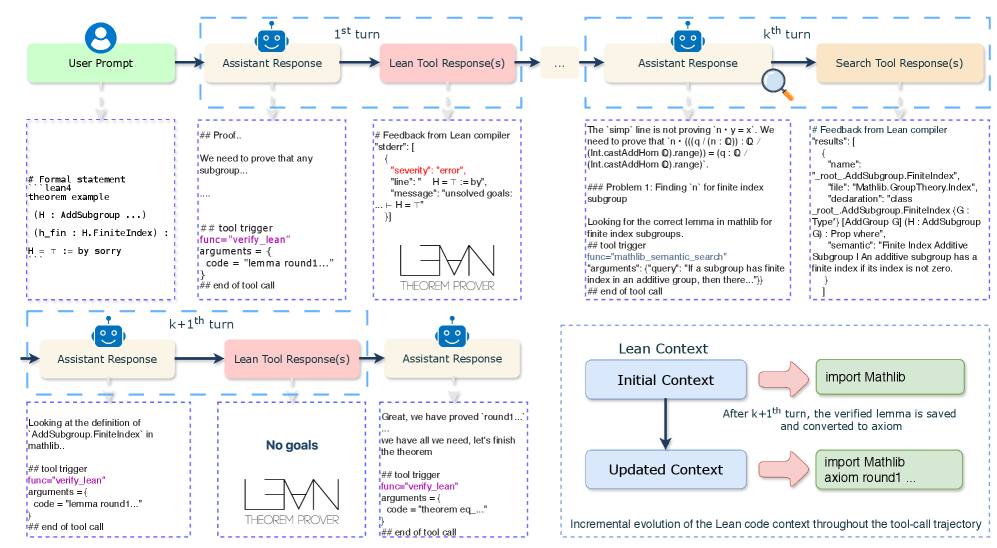
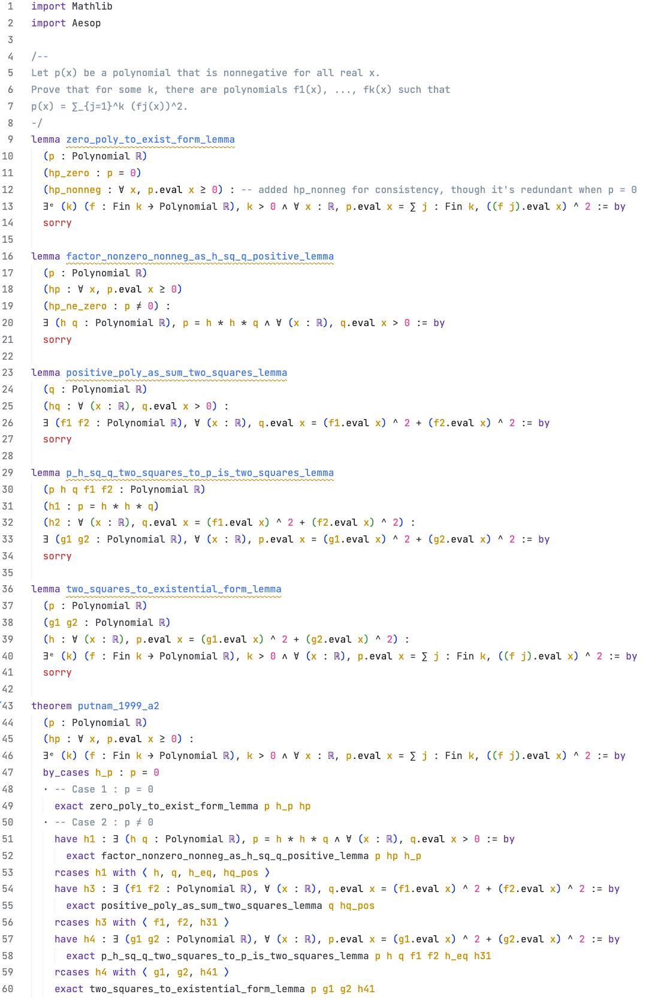

30 秒速览
形式化证明（Lean）能被机器完全验证、彻底消除幻觉，但长期以来在能力和效率上都远落后于自然语言证明。本文用大规模 agentic 强化学习训练了一个会主动调用 Lean、Mathlib 检索、Python 等工具的证明智能体：它在与 Lean 的反复交互中不断积累经验，越练越快、越练越强。再配上一套把自然语言证明「翻译」成 Lean 草图（sketch）的高效测试时扩展（TTS）工作流，Seed-Prover 1.5 用更小的算力预算刷到了 SOTA。
它解决了 88% 的 PutnamBench（本科级）、80% 的 Fate-H（研究生级）、33% 的 Fate-X（博士级）；并在 9 小时内做出 Putnam 2025 的 11/12 道题。核心结论：由高质量形式化反馈驱动的「从经验中学习」，是形式化数学推理未来的关键路径。
注：Seed-Prover 1.5 全流程约 10 H20-天/题，对比 Seed-Prover 1.0 的 18 H20-天/题、AlphaProof 的约 500 TPU-天/题，算力大幅降低。
01 要解决什么问题
如果大模型用自然语言已经能写出近乎严谨的证明，那费力做 Lean 形式化证明还值得吗？
用 Lean 做定理证明的最大好处是可信：每一步都由编译器机械验证，天然消除了自然语言证明里常见的「跳步」「逻辑漏洞」和幻觉。因此形式化验证被广泛视为数学研究的潜在范式变革。
但现实很骨感——形式化证明与自然语言证明之间存在巨大的能力与效率鸿沟。论文给出一个扎心对比：
- DeepSeek-Math-V2（自然语言）在 Putnam 2024 上拿到近满分；
- 而 AlphaProof（形式化）只解出整个 Putnam 基准的 56%（这套题平均比 2024 年更简单），且代价高达约 500 TPU-天/题。
于是有人质疑：形式化证明既费算力又能力受限，这条路还有意义吗？
02 已有方案怎么做、卡在哪
在 Seed-Prover 1.5 之前，基于大模型的 Lean 证明器主要分成两大流派。它们都能跑通，但都在「和 Lean 交互的颗粒度」上走了极端。点击展开看各自的做法与瓶颈。
做了什么：模型针对当前证明状态只生成单条 tactic，提交给 Lean，拿到新状态后再生成下一条，像下棋一样一步步推进（如 AlphaProof、BFS-Prover 等）。
怎么做：通常配合树搜索 / best-first search，在每个证明状态上扩展候选 tactic。
卡在哪：与 Lean 交互过于频繁，每步都要往返编译，长证明里累积的搜索与验证开销极大，效率低下。
做了什么：模型先做长链思考，然后一次性输出一整段完整 Lean 证明，只与编译器交互一次（如 Kimina、DeepSeek-Prover-V2、Seed-Prover 1.0 等）。
怎么做：把整道题当作一次「生成—编译」任务；失败就整段重写。
卡在哪：与 Lean 交互过于稀疏，模型拿不到中间反馈，一旦某处出错往往要推倒重来，验证信号利用率低。
Seed-Prover 1.5 是一个 agent 式证明器，以引理（lemma）为单位与 Lean 交互：既不像 step-level 那样每条 tactic 都打断，也不像 whole-proof 那样闷头写到底，而是增量式地一条条构造、验证、缓存引理。
这种颗粒度让交互更均衡高效，同时让模型能动态调整交互节奏、掌握辅助工具的使用——这正是本文方法的核心。
对照组还有 Hilbert：它用一个强通用推理模型做自然语言证明 + 一个专用 Lean 模型做验证；本文则用 Rubric RL 训练 sketch 模型来连接二者，并训练出更强的 agent 证明器。
03 本文方法
三块拼图：① 会用工具的 Agentic Prover；② 把它练强练快的 Agentic RL；③ 连接自然语言与形式化的 Sketch 模型，最后用一套分层 TTS 工作流把三者编排起来。
3.1 Agentic Prover：会主动调工具的证明智能体
不同于以往「写完整段证明再反复丢给编译器」的做法，本文让模型增量地、按需调用多种工具来一步步搭建形式化证明。一旦某条引理成功编译，它就被缓存进上下文并转成 axiom，后续步骤可直接复用，无需重新生成。模型的工具分三类：
这种「以引理为单位 + 增量缓存」的表示带来四点好处：

- User Prompt（绿色，左上）：输入是一条带 sorry 占位的 Lean 形式化命题（例：关于 AddSubgroup 有限指数的定理）。
- 第 1 轮 — Assistant Response → Lean Tool：模型先用自然语言分析「要证什么子目标」，再触发 verify_lean 提交一条 round1 引理；Lean 编译器返回反馈，此处报 severity: error 与 unsolved goals。
- 第 k 轮 — Assistant Response → Search Tool：模型转而调用 mathlib_semantic_search，用自然语言查询「有限指数子群相关引理」，检索返回最相关的 Mathlib 定理（如 AddSubgroup.FiniteIndex）。
- 第 k+1 轮 — Assistant Response → Lean Tool：模型借助检索到的定理重写引理，再次提交，编译器返回 No goals —— 该引理证明成功。
- 收尾：模型确认「需要的都齐了」，提交完整 theorem 完成证明。
- 右下角「Lean Context」面板：展示增量缓存机制——初始上下文只有 import Mathlib；当 round1 引理验证通过后，它被转成 axiom 追加进上下文（axiom round1 …），供后续轮复用。蓝色箭头/方框代表上下文随工具调用轨迹的逐步演化。
推理设置：输入为 Lean 形式化命题（可选附自然语言证明）；模型先用自然语言推理并调工具验证中间步，单轮内可多次调用、不限次数与顺序；当最终定理验证通过、或交互预算耗尽（最长 64K 序列、最多 28 次工具调用）时停止——这被记为 Pass@1。预算耗尽时可用「light inference」：自我总结后重启一条新轨迹。
3.2 Agentic Prover 的后训练：先冷启动，再大规模 RL
① Cold Start（冷启动）：在 Seed-Prover 1.0 的基础上，用自建合成数据做 SFT，让模型先学会本文的工具调用范式与 Lean 环境特有的交互模式。
② RL 训练：基于 VAPO 实现，并借鉴 ReTool 做工具集成强化学习。奖励极简——结果导向：证明被 Lean 编译器验证通过得 +1，否则 -1。训练中设计了三种任务格式：直接从形式化命题证明、基于自然语言草图证明、基于此前失败尝试的总结再证明。
其中 r_{i,t}(θ) 是新旧策略的概率比，rollout 中交错着工具调用与工具返回 𝒯；训练时模型实时与环境交互、执行工具并获取返回，进行多轮生成。
RL 数据是怎么筛的？用「难度过滤」聚焦在最有学习价值的题上
训练集 = 公开数据集（Big-Math、NuminaMath、Lean-Workbook、Kimina 等）+ 自建形式化数学教材（含《Graduate Texts in Mathematics》）。
- 用 SFT 模型在 light inference（Pass@4×8）下评估每道题；失败时会自我总结并基于总结重开轨迹。
- 剔除过易：被成功证明超过 3 次的样本删掉，把 RL 信号集中到足够难的题上。
- 剔除过难：任何提示策略下都证不出来的样本删掉。
- 保留有潜力的：若一道题在「总结提示」下能证、但「直接提示」下不能证，仍以直接提示形式保留——因为它可证、且有望提升模型效率。
3.3 Sketch 模型：把自然语言证明翻译成 Lean 草图
既然大模型的自然语言证明能力突飞猛进，何不拿来加速形式化？本文训练了一个 Sketch 模型：输入「形式化命题 + 其自然语言证明」，输出一份 lemma-style 的 Lean 草图。它把命题分解成 N 个相互独立的子目标——先用 sorry 占位各辅助引理，再把它们组织进主证明体。由于 Lean 保证了高层结构的可靠性，评估重心就落到引理的质量上：好草图的每条引理都数学有效，且最难的那条也要严格比原命题更易。

- 顶部（注释块）：以注释写下原始命题——「设 p(x) 对所有实数非负，证明存在多项式 f₁…f_k 使 p(x)=Σ f_j(x)²」，即要证明的数学目标。
- 中部 — 五条 lemma … sorry：模型把大命题拆成一串递进的辅助引理，每条都先用 sorry 占位（待证）：处理 p=0 的退化情形、把非负多项式因式分解为 h²·q（q 严格正）、严格正多项式写成两平方和、平方和的乘积仍是两平方和、最后归约到存在性形式。
- 底部 — theorem putnam_1999_a2：主证明体用 by_cases 分 p=0 / p≠0 两类，再依次 exact / rcases 调用上面的引理，把它们组装成对原命题的完整证明。
- 颜色含义：紫色为引理/定理名，蓝色为类型（如 Polynomial ℝ），橙色为关键词与 Mathlib 记号——整体是一份结构完整、但叶子节点尚待填充的「证明骨架」。
Sketch 模型怎么训：Rubric RL。同样用 VAPO，但奖励是混合信号：Lean 编译器保证草图结构正确，再由「LLM-as-a-Judge Rubric」作为语义价值模型（用 Long-CoT，比标量模型泛化更好）。流程上先让自然语言证明器逐条验证引理——只要有一条数学无效就直接判负（S_NL = -1，且作者发现用 NL 证明器「证伪」比用定理证明器便宜）；再让 LLM 综合评估草图整体质量（与 NL 证明的一致性、分解粒度、难度下降、Lean junk value 等）。最后融合成严格的二元奖励：
R = −1 其它情况
直觉：既要充分分解（至少 3 条引理）、又要结构编译通过（S_FL≥0）、还要语义高质量（S_NL≥0.7），三者全满足才给正奖励。
3.4 测试时工作流：三个智能体协作 + 递归分解
复杂定理的 Lean 证明常达上千行，单次整段生成在计算上不可行。为此本文设计了一套分层、多智能体协作的测试时工作流，统筹上下文管理、问题分解与子目标分配。下面这张图可逐步演示三个智能体如何协作、以及失败时如何递归回退。
04 几个有意思的点
越练越「省」，却越练越强
RL 训练中出现了反直觉的效率提升：平均函数调用次数从约 15 降到 10，平均序列长度从约 28K 降到 17K token，但模型的推理能力反而提升。这说明模型学会了更有策略地用工具，避免冗余的「试错式」调用——把搜索结果内化成了自己的知识。训练准确率也从初始约 50% 一路升到 1000+ 步后的近 90%。
自适应的搜索行为
同一个模型会因题制宜地调整工具使用：在 Fate-H 上平均要做约 10 次 Mathlib 检索（因为它高度依赖查库找定理），而在 Putnam 上平均只用 1–2 次。更有意思的是，越到后期的 checkpoint 检索次数越少，但性能仍在提升——能更快定位关键引理。
增量缓存：把已证引理变成 axiom
每当一条引理通过 Lean 验证，它就被缓存并转成 axiom 追加进上下文，后续推理直接引用。相比 whole-proof 方法反复重写完整证明历史，这种机制让上下文窗口的利用效率高得多——这也是 agent 式交互能兼顾能力与效率的关键工程细节。
05 实验结论一句话
用更小算力，在本科到研究生级别全面领先；博士级与前沿研究仍有距离。
在 PutnamBench 上，Seed-Prover 1.5 显著超过 AlphaProof、Hilbert、Aleph Prover 等强基线；相比自家 1.0，几乎所有基准都更强、却用更少算力。它解决了 PutnamBench 的 87.9%、Fate-H 的 80%，展示了处理本科与研究生级形式化证明的实力。
| 方法 | 算力预算 | Putnam | Fate-H | Fate-X | CombiBench |
|---|---|---|---|---|---|
| Seed-Prover 1.0 (medium) | 18 H20-天/题 | 50.4% | 35% | 9% | 39% |
| AlphaProof | 500 TPU-天/题 | 56.1% | – | – | – |
| Hilbert | avg pass@1840 | 70.0% | – | – | – |
| Aleph Prover | avg 1834 次工具调用 | 75.8% | – | – | – |
| Seed-Prover 1.5 | 10 H20-天/题 | 87.9% | 80% | 33% | 48% |
表对应原文 Table 2。另：仅用 Agentic Prover（Pass@8×8，不含 TTS 工作流）即可达到 Putnam 359/660、Fate-H 57/100、Fate-X 10/100，已显著超过 1.0 的 medium 工作流。
前沿数学：Erdős 问题与局限性解出了一些，但坦诚承认离「真正推进数学研究」还远
Seed-Prover 1.5 解出了若干 Erdős 问题（编号 124、198、303、316、330、350、370、379、418、449、493、499、645、728、958）。但作者坦诚：这些题数学上相对简单，或因形式化错误而只证明了平凡 / 简化版本。无论用自然语言还是形式语言，距离真正帮助攻克前沿开放猜想仍有距离。
根因——「依赖性问题」：IMO/Putnam 题被刻意设计成不需要先验论文知识；而推进真正的数学研究往往要综合大量相关论文的洞见。作者指出需攻克三个相互交织的挑战：① 识别最有影响力、最相关的论文；② 在这些工作之上做自然语言证明；③ 发展可扩展的方法来形式化论文本身及其推论。